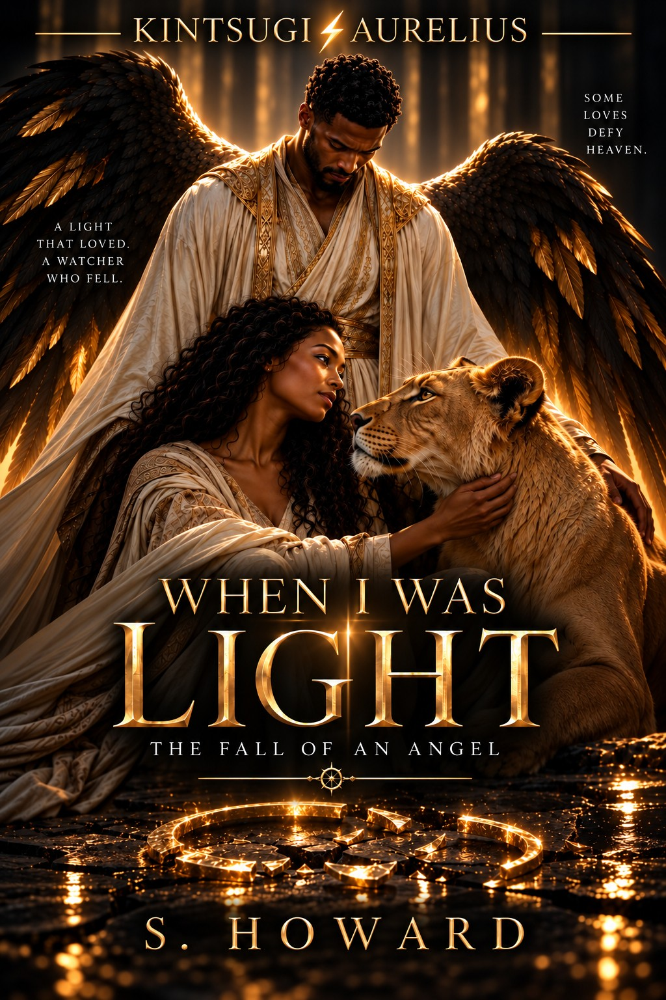

Publication details forthcoming
Read
Read description
Heaven was never meant to know forbidden love. For Uzza, a powerful Watcher entrusted with divine purpose, obedience has always been absolute. His existence follows laws older than humanity, and his loyalty has never been questioned. Until Aziza. What begins as an unexpected connection becomes a love neither Heaven nor its celestial guardians can ignore. As their bond deepens, the very laws governing their existence threaten to tear them apart. When the heavenly Council must decide their fate, devotion becomes defiance, and the consequences of their love reach far beyond anything either imagined. When I Was Light is a dark, emotionally powerful story about love, sacrifice, celestial authority, and the terrible price of choosing your heart over everything you were created to obey.
Listen · Micah
Prologue
Read prologue
Once, I was light.
Not fire, not star, but the radiance that existed before either learned to burn. My name was Uzza, and I was a Watcher. I stood on the high walls of Heaven, my wings stretched wide across eternity, and I believed myself eternal. I was fashioned to see all things and yet touch none, to carry the record of mortals to the Throne but never know the taste of their breath, the weight of their sorrow, the shape of their joy.
I thought that was glory. I thought obedience was the highest form of worship. We called it duty, but it was only sleep.
From above I watched kingdoms rise and fall, families scatter like ash on the wind, children laugh and die before the world remembered their names. I was told they were fragile dust, sparks quick to vanish. But sparks can light the dark. And in their fragility, I saw something we who were called eternal lacked.
Mortals loved fiercely because they knew their time was short.
Angels never loved at all.
I envied them, though I did not yet understand that envy.
There was a voice once, trembling in prayer, and it pierced me like an arrow. Not for herself did she plead, but for the hungry, the weary, the forgotten. Her name was not yet mine to speak, but her cry made me lean closer, my hand pressed against the veil that separated Heaven from earth.
That was the moment I ceased to be only light. That was the beginning of my shadow.
I would come to learn that Heaven does not forgive what it cannot control. That love, when turned toward flesh and soil, is the one fire angels are forbidden to kindle. And yet, once lit, it cannot be smothered.
So I confess this truth before the tale begins: I did not fall because I was weak. I fell because I was strong enough to love.
And once I loved, I was not light anymore. I was judgment.
Listen · Steven